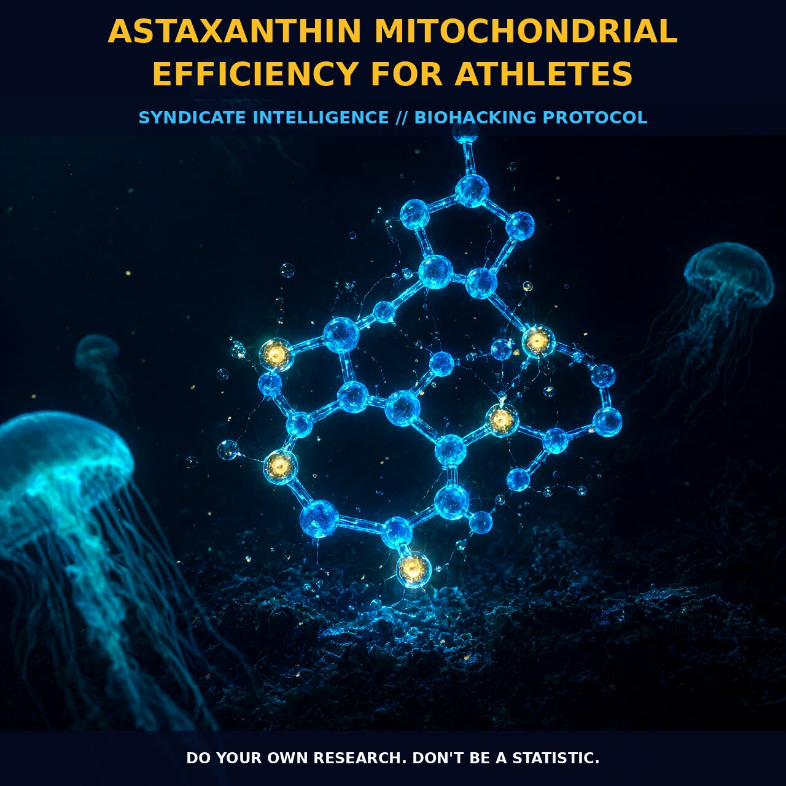

Astaxanthin Mitochondrial Efficiency and Substrate Shifting in Athletes

1. The Molecular Architecture of Mitochondrial Defense
Astaxanthin is not merely a carotenoid; it is a structural architect of cellular integrity. As a xanthophyll, its unique amphiphilic structure allows it to span the lipid bilayer of cell membranes, positioning itself as a potent intracellular antioxidant. Unlike many compounds that can become pro-oxidants under stress, astaxanthin neutralizes free radicals by dynamically accepting or donating electrons without compromising its own stability. This membrane-spanning capability is critical for protecting the mitochondrial redox state and functional integrity against oxidative stress.
Its impact is most pronounced in tissues with the highest energy demands: the heart and skeletal muscles. Research highlights a specific mechanistic lever: astaxanthin inhibits the oxidative modification of carnitine palmitoyltransferase I (CPT I). Since CPT I is the gatekeeper for transporting fatty acids into the mitochondria for beta-oxidation, its preservation directly enhances lipid metabolism during exercise. This suggests that astaxanthin does not just passively scavenge reactive oxygen species (ROS) generated during contraction but actively stabilizes the mitochondrial membrane potential to ensure sustained ATP production under heavy metabolic load.
2. Biological Leverage: Substrate Shifting and Cardioprotection
For the high-performance athlete, the primary biological leverage of astaxanthin lies in its ability to modulate substrate utilization. By shifting metabolic preference toward fatty acids, it promotes a more efficient energy profile during prolonged exertion. Studies indicate increased levels of plasma non-esterified fatty acids and glucose during exercise, which correlates with decreased fat accumulation and lower blood lactate concentrations.
This metabolic flexibility results in two key outcomes for athletes: improved endurance capacity and a delayed onset of muscular fatigue. Furthermore, the preservation of heart mitochondrial membrane potential and contractility index suggests significant cardioprotective benefits. For athletes facing high-intensity or prolonged physical stress, maintaining cardiac output becomes less metabolically costly.
Beyond the musculature and cardiovascular system, astaxanthin offers profound neuroprotective effects. By mitigating oxidative stress-associated neurodegeneration, it supports long-term brain health in physically active individuals. Supplementation is also linked to improved visual acuity and reduced muscle fatigue—factors that compound to enhance overall sports performance without negatively altering lymphocyte mitochondrial membrane potential. Ultimately, its inhibition of apoptosis under oxidative challenge makes it a strategic tool for preserving cellular viability across both acute performance metrics and chronic tissue integrity.
3. Tactical Implementation: Saturation Over Acute Dosing
Effective implementation of astaxanthin requires an understanding of its pharmacokinetics. The compound accumulates significantly in gastrocnemius and heart tissues, a process that typically reaches steady-state saturation within three weeks. This accumulation pattern supports the argument for consistent daily intake over acute bolus dosing, leveraging its lipophilic nature to maximize tissue availability while accounting for slow clearance from deep tissues.
Dosing protocols in reviewed literature vary but converge on specific parameters. Competitive cyclists have demonstrated significant improvements in time trial performance following pre-exhaustion rides with encapsulated astaxanthin at 4 mg per day over a twenty-eight-day period. Other investigations employ higher doses ranging from 1.2 to 30 mg/kg body weight, with metabolic benefits becoming evident within five weeks of consistent administration.
Given the three-week window for intracellular saturation, athletes should incorporate astaxanthin during periods of high training load or specific endurance-focused blocks. While individual responses may vary based on baseline antioxidant status and exercise intensity, monitoring subjective markers like muscle fatigue and visual clarity alongside objective performance data is prudent to optimize the stack.
4. Prostar Life Hack
Stack with Dietary Lipids for Maximum Saturation: Because astaxanthin is lipophilic, its bioavailability is significantly enhanced when taken with a source of fat (such as olive oil, avocado, or eggs). To accelerate the three-week saturation window in skeletal muscle and heart tissue, consume your daily dose with your post-workout meal rather than on an empty stomach. This ensures immediate transport into the bloodstream and deeper tissue penetration, optimizing the shift toward fatty acid utilization during your next training block.
Prostar Life Hack
Stack with Dietary Lipids for Maximum Saturation: Because astaxanthin is lipophilic, its bioavailability is significantly enhanced when taken with a source of fat (such as olive oil, avocado, or eggs). To accelerate the three-week saturation window in skeletal muscle and heart tissue, consume your daily dose with your post-workout meal rather than on an empty stomach. This ensures immediate transport into the bloodstream and deeper tissue penetration, optimizing the shift toward fatty acid utilization during your next training block.
[ AUTHOR: LEAD TECHNICAL RESEARCHER ]